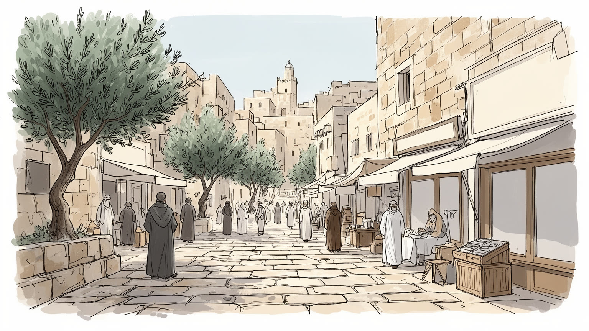
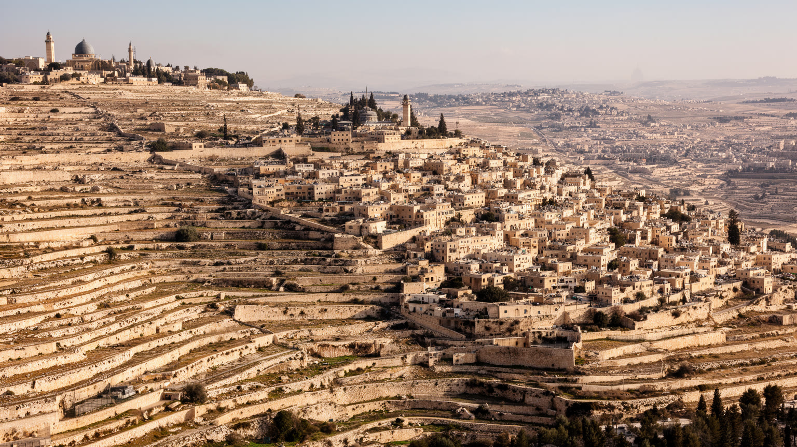
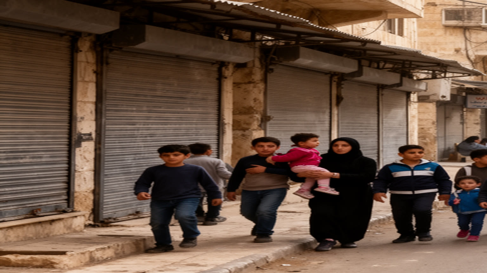
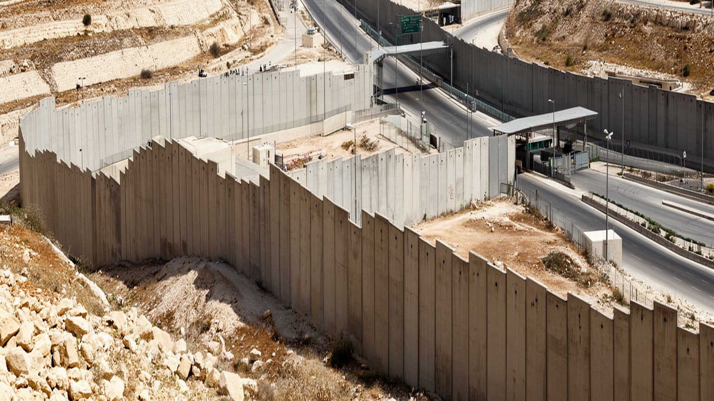
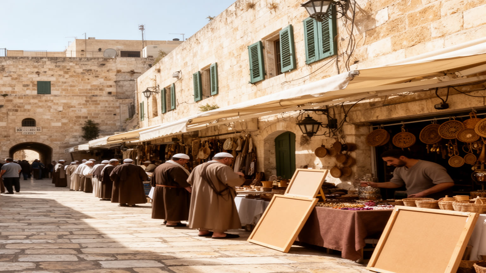
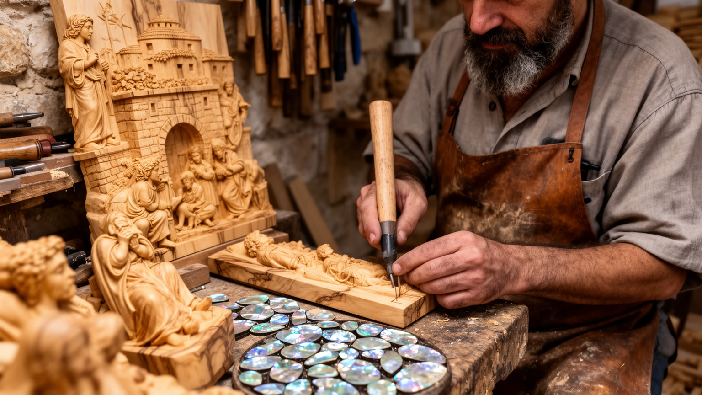
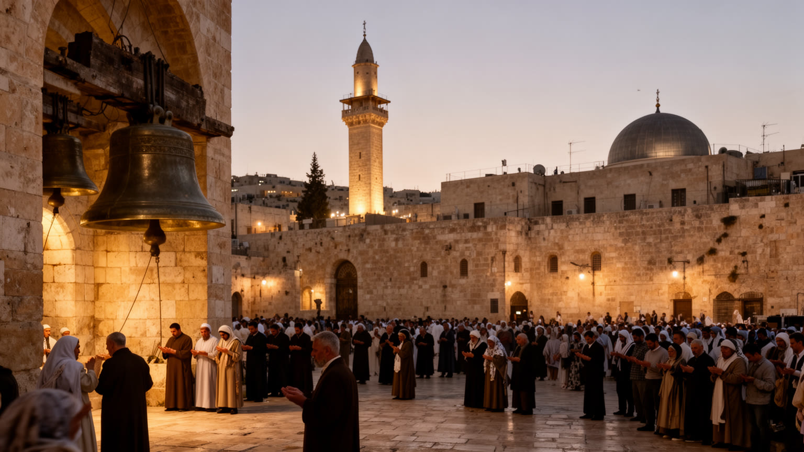
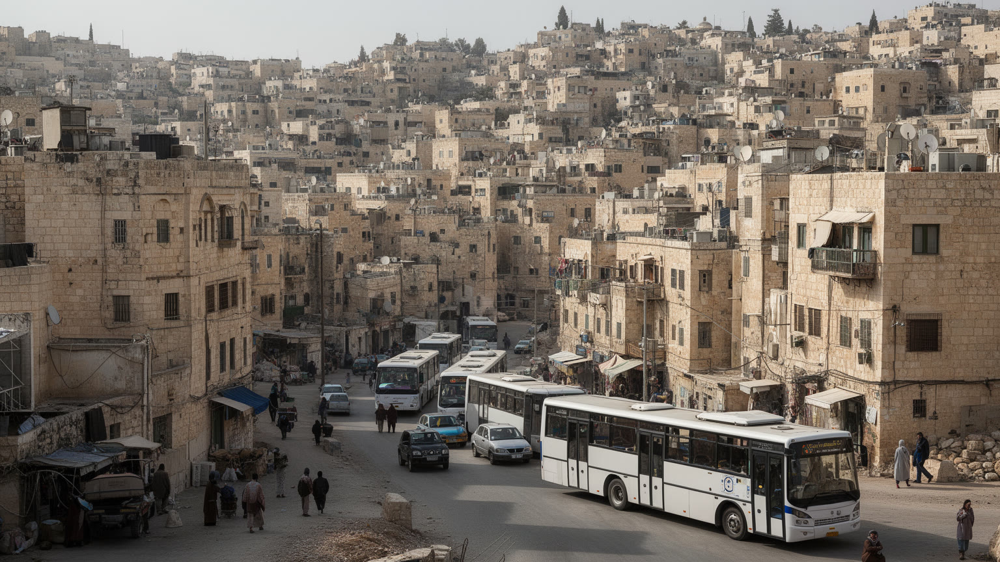
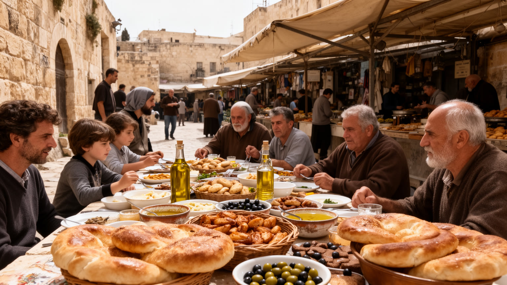
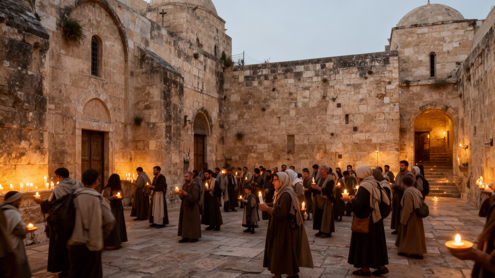

地政学
ベツレヘムはエルサレムの南約十キロにあり、短い距離が検問、分離壁、入植地、行政境界で複雑になる。聖地として世界の視線を集める一方、住民の通勤、通学、商売は西岸の政治地理に強く左右される都市である。

🇵🇸 パレスチナ / 西岸地区 / World City Atlas
エルサレムの南の丘にある小さな都市は、降誕教会と巡礼、パレスチナの暮らし、観光労働、分離壁と検問、オリーブ木工芸、宗教暦の時間を一つの街路に重ねている。
都市の骨格
ベツレヘムは世界的な巡礼地であると同時に、学校、工房、ホテル、難民キャンプ、教会、モスク、検問へ向かう道路が交差する生活都市である。聖書の記憶と現代の政治地理が、短い距離の中で重なり合う。

ベツレヘムはエルサレムの南約十キロにあり、短い距離が検問、分離壁、入植地、行政境界で複雑になる。聖地として世界の視線を集める一方、住民の通勤、通学、商売は西岸の政治地理に強く左右される都市である。
巡礼観光、宿泊、飲食、土産物、オリーブ木工芸、教育、行政、小売が雇用を支える。来訪者の増減はホテル、ガイド、工房、タクシー、家族経営の店にすぐ響き、政治情勢が家計を大きく揺らす街でもある今である。
降誕教会、マンガー広場、カトリック、正教、アルメニア系の儀礼、ムスリム住民の日常、クリスマスの複数暦が重なる。信仰は観光名所の背景ではなく、学校、家族、店、広場の時間を整える生活文化でもある街だ。
住民は丘の住宅地、旧市街、大学、病院、バス、タクシー、検問を使い分け、旅行者は教会、壁画、工房、食堂を歩く。小さな都市の親密さと、移動制限や失業への不安が同じ日常に並ぶ街である今もなお続いている。

ベツレヘムを理解する出発点は、エルサレムの南に続く石灰岩の丘陵である。市街は大きな平野に広がるのではなく、尾根、谷、斜面、古い道をたどって密に重なり、ベイト・ジャラ、ベイト・サフール、アイダ難民キャンプ、周辺村落と連続する。乾いた夏と冷涼な冬、オリーブの段畑、石造りの家、細い階段道は、観光写真の背景である前に、住民の移動と建築を決める条件である。丘の都市では、近く見える教会や学校も坂と曲がり角で距離が変わり、車、徒歩、乗合タクシーの使い方が生活の感覚を作る。エルサレムまでの物理的な近さは大きな意味を持つが、検問、分離壁、道路の分断によって、時間の距離は政治的に伸び縮みする。谷の向こうに見える住宅地、修道院、入植地、農地は、地形の連続性と行政の断片化を同時に示す。冬の雨は低い谷へ水を集め、夏の乾きは貯水、庭、農地の管理を意識させる。風向きや日陰も、家の窓、屋上、店先の使い方を左右する。古い道は礼拝、交易、親族訪問の記憶を残し、新しい道路は政治的な境界を避けるように曲がる。ベツレヘムの地理は、聖地が孤立した舞台ではなく、丘陵の生活圏、宗教施設、観光経済、移動制限が絡み合う都市であることを教える。地図を読む時には、中心のマンガー広場だけでなく、学校へ向かう坂道、工房のある路地、壁沿いの通勤路、オリーブ畑の残る斜面まで見る必要がある。

ベツレヘムの名を世界へ結びつけているのは、イエス降誕の伝承地に建つ降誕教会とマンガー広場である。教会は単なる観光名所ではなく、ギリシャ正教、カトリック、アルメニア使徒教会など複数の共同体が長い歴史の中で空間と時間を分け合ってきた複雑な宗教施設である。地下の聖所へ向かう列、低い入口、石の柱、蝋燭、聖歌、修道士の動きは、信仰の集中と管理の緊張を同時に感じさせる。巡礼者は世界中から訪れ、数時間だけ滞在する団体客もいれば、祈りのために静かに長く過ごす人もいる。教会の外では、広場、土産物店、カフェ、警備、バスの乗降、ガイドの説明が宗教的な時間を都市の経済へ変える。巡礼の順路は、礼拝堂、洞窟、ミサ、写真、買い物、食事を短い距離でつなぎ、聖なる経験と消費の時間を切り離しにくくする。修復や保存の作業も、教派間の協議と国際的な支援を必要とし、建物そのものが都市外交の場になる。クリスマスは西方教会、東方教会、アルメニア教会の暦が重なり、同じ都市に複数の祝祭の波を作る。巡礼はベツレヘムの誇りであり、同時に観光業の季節性と政治情勢への弱さを抱える。聖地を読むには、信者の祈り、教派間の調整、店主の売上、警備の緊張、住民の通行を同じ広場で見る必要がある。降誕教会は過去の記念碑ではなく、今日のパレスチナ都市が世界宗教と直接接続する場所である。

ベツレヘムは世界的な聖地である前に、学校へ行く子ども、大学生、店主、工房の職人、ホテル従業員、看護師、タクシー運転手、家庭を支える親たちが暮らすパレスチナの都市である。旧市街の石畳、坂の住宅地、商店街、パン屋、薬局、携帯電話店、結婚式場、教会とモスクの近さは、巡礼者が短時間で見落としがちな生活の厚みを示す。住民の多くは政治的な不安、雇用の不安定さ、移動制限、物価、若者の将来、親族の海外移住と向き合いながら、日常のリズムを保っている。家庭の食卓、学校行事、宗教祝日、サッカー、大学の授業、夕方の買い物は、緊張した報道だけでは見えない都市の時間である。親族が海外にいる家庭も多く、送金、帰省、留学、結婚式のための移動が、街を広いディアスポラの網へつなぐ。難民キャンプの記憶や周辺村落との親族関係も、都市の会話と政治意識を形づくる。キリスト教徒とムスリムの住民は、家族、近隣、商売、学校を通じて重なり合い、宗教の違いを日常の距離感の中で扱う。観光の中心だけを見ると、ベツレヘムは聖書の地名として固定されがちだが、実際には若い世代が働き方を探し、家族が住宅を増築し、店が不安定な客足に耐える現代都市である。聖地の重みは日常を消すのではなく、日常の中に入り込み、住民が世界の視線と生活の必要を同時に引き受ける形で現れる。

ベツレヘムの都市経験を大きく変えているのが、分離壁、検問、周辺の入植地、道路網による空間の制約である。エルサレムは地理的にはすぐ近いが、通勤、通院、礼拝、家族訪問、商売、観光の移動は許可、待ち時間、交通手段、政治情勢に左右される。壁は一部で街路のすぐ横を通り、住宅、店、難民キャンプ、観光バスのルート、壁画を描く場所を同時に作っている。訪問者は壁画を見て写真を撮ることが多いが、住民にとって壁は毎日の通路、失われた土地、視界の遮断、心理的な圧迫でもある。検問の列は、都市の時間を予測しにくくし、働く人の遅刻、学生の疲労、患者の不安、商店の仕入れに影響する。壁が安全保障の名で語られる一方、パレスチナ側では都市の成長、土地利用、農地へのアクセス、家族関係を狭める構造として経験される。ホテルの窓から見える壁と、住民が夜明けに並ぶ検問は、同じ構造の異なる顔である。農地へ向かう道や親族の家への近道が失われることも、都市の社会的な距離を変える。ベツレヘムを読む時、壁を単なる政治的記号やストリートアートの背景にしてはならない。それは地理を作り直すインフラであり、都市の近さ、経済、観光、精神的な自由を変える装置である。マンガー広場の宗教的な普遍性と、壁沿いの閉塞感を同時に見ることで、聖地が現代の占領と移動制限の中に置かれていることが分かる。

ベツレヘムの経済は、巡礼と観光の波に強く結びついている。ホテル、ゲストハウス、レストラン、ガイド、バス会社、タクシー、土産物店、オリーブ木工房、聖具店、清掃、警備、通訳、写真サービスまで、多くの仕事が来訪者の数に左右される。クリスマスや復活祭の時期には広場と宿泊施設が活気づくが、紛争、治安不安、国境管理、感染症、航空便の減少があると、客足は急に途絶える。団体旅行の多くはエルサレムやイスラエル側の事業者と結びつき、ベツレヘムでの滞在時間が短い場合、地元に落ちる収入は限られる。店主や職人にとっては、巡礼者が何を買い、どこで食べ、誰のガイドを使うかが家計を直接動かす。観光は誇りと収入を生む一方、都市を聖地イメージだけに閉じ込め、住民の複雑な暮らしを見えにくくすることもある。閑散期には在庫を抱え、家賃や従業員の賃金をどう払うかが小さな店の重い課題になる。持続的な観光には、長く滞在し、地元の宿に泊まり、工房や食堂を訪れ、壁や難民キャンプの現実を表面的に消費しない態度が求められる。地域のガイドを選ぶことも、説明の視点と収入の行き先を変える。ベツレヘムの観光経済を読むことは、祈りの旅がどのような労働、仲介、政治的制約、家族経営に支えられているかを確かめることである。聖地への訪問が地域の暮らしを支えるには、短い写真の消費を越える関係が必要になる。

ベツレヘムの土産物として知られるオリーブ木の彫刻は、単なる小物ではなく、土地、信仰、家族経営の技術をつなぐ産業である。十字架、聖家族、羊飼い、ロザリオ、聖書の場面を刻んだ品は、巡礼者が祈りの記憶を持ち帰るための物であり、職人にとっては生活を支える仕事である。工房では木目を読み、乾燥させ、削り、磨き、細かな表情を作る技術が世代を越えて受け継がれてきた。オリーブの木はパレスチナの農地と暮らしの象徴でもあり、工芸品には聖地の土と家族の労働が重なる。だがこの産業は、観光客の減少、輸出の難しさ、安価な大量生産品、材料費、若者の職業選択、政治的な移動制限に揺さぶられる。店頭で短く値切られる商品にも、長い修業と不安定な販売の時間が含まれている。機械加工を取り入れる工房もあるが、仕上げの感覚や図像の選び方には家ごとの技術が残る。観光が止まると、職人は在庫を抱え、海外注文や親族の支援でしのぐこともある。観光客が工房を訪れ、職人の説明を聞き、適正な価格で買うことは、文化を消費するだけでなく技術の継続を支える行為になる。ベツレヘムの工芸を読む時には、聖具の美しさだけでなく、働く手、家族の会計、原木の入手、輸出書類、停滞する注文まで見る必要がある。オリーブ木工芸は、祈りの象徴であると同時に、聖地で生きる人びとの経済の現実を映す。

ベツレヘムの宗教生活は、降誕教会の一地点だけで完結しない。カトリック、ギリシャ正教、アルメニア系、シリア系などのキリスト教共同体に、ムスリム住民の礼拝と生活が重なり、街には鐘、アザーン、学校行事、家族の祝祭、葬儀、結婚式、断食月、聖週間、複数のクリスマスが巡る。宗教は観光客が見る儀礼である前に、名前、学校、親族関係、商売、休日、食事、近隣の助け合いを形づくる日常の制度である。キリスト教徒の比率は長期的に変化してきたが、教会、修道院、教育機関、慈善活動、海外移民とのつながりは、都市の文化と国際関係に大きな役割を持つ。ムスリムとキリスト教徒の共存は理想化されるだけではなく、政治、経済、家族の移住、人口構成の変化の中で現実的に調整されている。子どもは学校や近所で異なる祝日を知り、店は客の宗教暦に合わせて営業時間や品ぞろえを変える。聖職者、教師、家族の長老は、儀礼だけでなく相談や福祉の窓口にもなる。広場の儀礼は世界中へ配信され、宗教指導者や外交団も訪れるが、その同じ日に住民は店を開け、子どもを迎え、交通規制をやり過ごす。ベツレヘムの宗教を読むには、神学的な聖地としてだけでなく、多宗教の都市生活を組み立てる実務として見る必要がある。祈りは人を集める力であり、同時に住民が不安定な政治環境の中で共同体を保つ方法でもある。

ベツレヘムの住宅と移動は、丘の地形だけでなく政治的な境界に強く左右される。家族が増えると同じ敷地に階を足し、親族の近くに住むことが多いが、土地の制約、建築許可、道路の分断、住宅費の上昇は若い世帯の選択を狭める。市内の移動は徒歩、タクシー、バス、自家用車に頼り、エルサレムや周辺地域へ向かう時には検問と許可の問題が加わる。通勤時間が読めないことは、仕事の安定、学校の出席、病院の予約、商売の配送に影響する。壁や道路の配置は、近隣どうしの距離を変え、家族や友人の訪問にも心理的な負担を残す。観光客には短いバス移動として見える道が、住民にとっては毎日の緊張を含む生活インフラである。住宅地では駐車、排水、公共空間、緑地の不足も課題となり、丘の斜面に広がる増築は都市計画の難しさを映す。難民キャンプや古い住宅地では人口密度が高く、子どもの遊び場や静かな学習場所も限られる。女性や高齢者の移動は、家族の送迎や近所の助け合いに支えられる場面も多い。若者が学び、働き、結婚し、住み続けられるかは、政治状況だけでなく、家賃、雇用、交通、学校、医療の組み合わせで決まる。ベツレヘムを暮らしの都市として見るなら、降誕教会へ向かう巡礼路だけでなく、住民が朝夕に使う坂道、検問への道、バス停、狭い駐車場、増築された家の階段を読む必要がある。

ベツレヘムの日常は、教会の広場だけでなく、パン屋、菓子店、コーヒー、肉屋、野菜店、家族の食卓、大学生の軽食、結婚式の料理に表れる。パレスチナの食文化には、オリーブ油、ザアタル、フムス、ファラフェル、マクルーバ、ムサッハン、焼き菓子、濃いコーヒーがあり、家庭と店、祝祭と普段の昼食をつないでいる。巡礼者向けのレストランがある一方、住民が通う小さな食堂や市場には、観光パンフレットに載りにくい都市の親密さが残る。食は宗教暦とも結びつき、断食、祝祭、クリスマス、復活祭、家族の集まりで食卓の意味が変わる。観光客が短く立ち寄るだけでは、料理の背後にある農村とのつながり、親族の労働、女性の家庭内労働、移民先から戻る家族の贈り物は見えにくい。物価の上昇や収入の不安定さは、食卓にも直接響く。朝のパンを買う列や夕方のコーヒーの時間は、政治的な緊張の中でも街が普通のリズムを取り戻す瞬間である。ホテルの厨房、広場のカフェ、学校の売店、夜の屋台は、聖地の経済を日々支える労働の場所でもある。ベツレヘムを食から読むことは、名物を探すだけではなく、住民が不確かな政治環境の中で家族を集め、客を迎え、日常を保つ方法を見ることである。パンの匂い、店主との会話、祝祭の皿は、都市をニュースの見出しではなく暮らしの場として理解させる。

ベツレヘムは、世界中で強い宗教的イメージを持つ都市である。多くの人にとってその名は降誕、クリスマス、巡礼、聖歌と結びつく。しかし都市を深く読むには、その象徴の下にある現代のパレスチナ都市を見なければならない。丘の住宅地、オリーブ木工房、学校、ホテル、難民キャンプ、壁沿いの道路、検問、広場の店、教会とモスクの生活時間は、聖地を固定された過去ではなく現在の都市にしている。観光は大切な収入源だが、政治情勢によって急に止まり、家族経営の店や職人の生活を揺らす。分離壁は訪問者に強い印象を与えるが、住民にとっては毎日の移動と将来設計を変える現実である。宗教儀礼は世界へ開かれているが、同時に住民が共同体を保つ日常の仕組みでもある。ベツレヘムを訪れることは、聖地を消費するだけでなく、祈り、労働、政治、住宅、食卓が同じ狭い都市空間に重なる事実に向き合うことだ。短い滞在でも、どこに泊まり、誰から説明を聞き、何を買うかが、都市との関係を変える。住民の声を聞くほど、聖地の普遍性は抽象的な美談ではなく、具体的な生活の重さを伴う。小さな市域に世界宗教と地域の生活が凝縮しているからこそ、この都市は規模以上の重みを持つ。降誕教会の地下の静けさと、壁沿いのざわめき、工房の木の香り、家庭の食卓を同じ地図に置く時、ベツレヘムは記号ではなく生きた都市として立ち上がる。